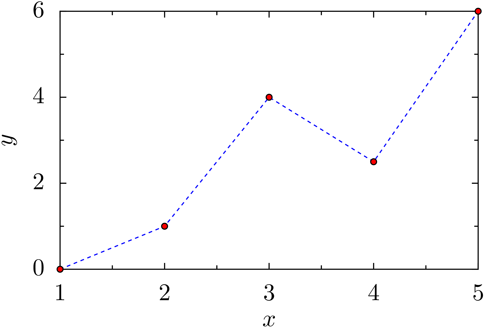
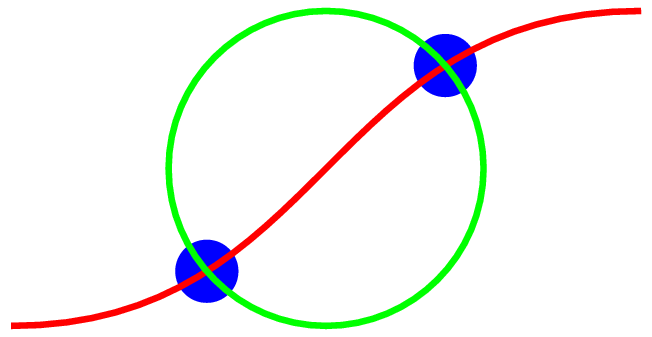

Erstellung von Grafiken¶
Häufig ist es notwendig, die numerischen Ergebnisse eines Programms in grafischer Weise darzustellen. Hierzu gibt es verschiedene Möglichkeiten. Man kann beispielsweise die Ergebnisse zunächst in einer Datei abspeichern und dann mit Hilfe eines speziellen Programms eine grafische Aufbereitung vornehmen. In diesem zweiten Schritt kann man eigene, in Python oder einer anderen Sprache geschriebene Programme einsetzen oder aber auf existierende Programme zurückgreifen. Es gibt eine Vielzahl solcher Programme, aus denen man je nach den jeweiligen Anforderungen ein geeignetes auswählen kann. Ein häufig verwendetes Programm zur Darstellung numerischer Daten ist zum Beispiel gnuplot [1].
Möchte man die Erzeugung der Grafik mit einem eigenen Python-Programm bewerkstelligen, so greift man sinnvollerweise auf vorhandene Programmbibliotheken wie matplotlib [2] oder PyX [3] zurück. Da in einem solchen Fall sowohl die Daten als auch die Grafik in einem Python-Programm erzeugt werden, hat man die Möglichkeit, beide Schritte in dem gleichen Programm auszuführen. Lassen sich die Daten jedoch nur mit großem numerischem Aufwand erhalten, so sollte man daran denken, die Daten abzuspeichern, selbst wenn man die Grafik anschließend direkt erzeugt. Nichts ist ärgerlicher, als viel Rechenzeit in den Sand gesetzt zu haben, weil der Grafikteil einen Programmierfehler enthielt und so die errechneten Daten letztlich verloren gingen. Gegebenenfalls kann man den Grafikteil des Programms mit schnell erzeugbaren Daten testen.
Im Folgenden werden wir eine Einführung in die Benutzung von matplotlib und
PyX geben, die allerdings beide wesentlich mächtiger sind als es in diesem
Rahmen gezeigt werden kann. Die Beschreibung kann also nur einen allerersten Eindruck
geben. Für einen guten Überblick über die Möglichkeiten dieser
Grafikmodule empfiehlt sich ein Blick auf die Beispielseiten
http://matplotlib.org/gallery.html und die Unterseiten von
http://pyx.sourceforge.net/examples/index.html und http://sourceforge.net/p/pyx/gallery/index.
matplotlib¶
Nachdem SciPy/NumPy keine grafischen Fähigkeiten besitzt, wird in diesem Umfeld
zur Erzeugung von Grafiken häufig matplotlib empfohlen, das unter anderem
auf den Array-Datentyp von NumPy zurückgreift. matplotlib kann auf zwei
verschiedene Arten verwendet werden. Zum einen kann man mit Hilfe des
Python-Interpreters durch direkte Eingabe von Kommandos schnell Grafiken
erzeugen. Zum anderen kann man Grafiken aber auch mit einem vollständigen
Python-Programm erstellen. Letzteres ist vor allem dann sinnvoll, wenn man
Eigenschaften der Grafik im Detail festlegen will. Wir beginnen zunächst mit der
ersten Variante und betrachten ein Beispiel, in dem zwei Besselfunktionen unter
Verwendung von SciPy dargestellt werden.
1 2 3 4 5 6 7 8 9 10 11 | >>> import numpy as np
>>> import matplotlib.pyplot as plt
>>> from scipy.special import j0, j1
>>> x = np.arange(0, 50, 0.2)
>>> y1 = j0(x)
>>> y2 = j1(x)
>>> plt.plot(x, y1)
[<matplotlib.lines.Line2D object at 0xa273f0c>]
>>> plt.plot(x, y2)
[<matplotlib.lines.Line2D object at 0xa2732cc>]
>>> plt.show()
|
In Zeile 1 wird zunächst das NumPy-Paket geladen, um in Zeile 4 ein Array mit
x-Werten erzeugen zu können. Anschließend wird in Zeile 2 die
Plot-Funktionalität von matplotlib, soweit sie im Folgenden benötigt wird,
geladen [4]. Auch hier wird, wie schon bei NumPy, eine übliche Abkürzung
eingeführt, um Tipparbeit zu sparen. Schließlich werden in der Zeile 3 zwei
Besselfunktionen aus SciPy importiert, die im Weiteren dargestellt werden
sollen. In Zeile 4 wird nun, wie schon angedeutet, ein Array mit den
x-Werten erzeugt, für die in den folgenden beiden Zeilen Arrays mit den
Besselfunktionen \(J_0(x)\) und \(J_1(x)\) berechnet werden. In den
Zeilen 7-10 werden dann die beiden Funktionsgraphen erzeugt. Wie die Zeilen 8
und 10 andeuten, handelt es sich dabei um matplotlib.lines.Line2D-Objekte.
Abschließend erfolgt die Darstellung des Graphen in Zeile 11. Die Ausgabe
erfolgt auf den Bildschirm, wo die Grafik in einem Fenster, wie in der
folgenden Abbildung gezeigt, dargestellt wird.
{kind=link}
Die Knöpfe am linken unteren Rand des Fensters kann man benutzen, um zum Beispiel in die Grafik hineinzuzoomen wie es die folgende Abbildung zeigt oder den dargestellten Ausschnitt zu verschieben.

Mit dem Haussymbol kommt man immer wieder zu der ursprünglichen Darstellung zurück.
Alternativ zu dieser interaktiven Arbeitsweise kann man Grafiken auch mit Hilfe eines normalen Python-Programms erzeugen. Als Beispiel wollen wir ein Programm betrachten, das eine Zufallsbewegung berechnet und darstellt.
1 2 3 4 5 6 7 8 9 10 11 12 13 14 15 16 17 18 | import numpy as np
from numpy.random import rand
import matplotlib.pyplot as plt
from math import pi
npts = 10000
r = 0.1
for _ in range(3):
x = np.zeros(npts+1)
y = np.zeros(npts+1)
richtung = 2*pi*rand(npts)
x[1:] = np.cumsum(r*np.cos(richtung))
y[1:] = np.cumsum(r*np.sin(richtung))
plt.plot(x, y)
plt.xlabel("x")
plt.ylabel("y")
plt.savefig("randomwalk.pdf")
|
In den ersten vier Zeilen werden zunächst wieder wie gewohnt Module importiert,
wobei in Zeile 2 eine Funktion zur Erzeugung von Zufallszahlen aus NumPy
importiert wird. Die Zufallsbewegung wird nun in einer diskreten Weise durch
npts Punkte spezifiziert, wobei jeweils ein Schritt der Länge r in eine
Zufallsrichtung, die durch ein Element des Arrays richtung festgelegt ist,
ausgeführt wird. Diese Schritte werden in den Zeilen 12 und 13 kumulativ
aufsummiert, um die Trajektorien zu erzeugen. Durch die Zeilen 9 und 10 und die
verschobene Indizierung in den Zeilen 12 und 13 wird dafür gesorgt, dass alle
Trajektorien im Ursprung starten. Die durch die Werte in x und y
definierte Trajektorie wird in Zeile 14 geplottet. Insgesamt wird dieser
Vorgang mit Hilfe der for-Schleife dreimal durchgeführt. Abschließend wird
noch eine Achsenbeschriftung hinzugefügt und schließlich die Abbildung in einer
PDF-Datei abgespeichert, die im Folgenden dargestellt ist.
{kind=link}
Hier stellt man fest, dass matplotlib automatisch die Farbe der Linien wechselt.
Alternativ hätte man die Farben auch explizit spezifizieren können.
PyX¶
Eine mögliche Alternative zu matplotlib stellt PyX dar, das
von André Wobst und Jörg Lehmann, in der Anfangsphase der Programmentwicklung
als Doktoranden am Lehrstuhl für Theoretische Physik I der Universität Augsburg
tätig, programmiert wurde und noch weiterentwickelt wird. Etwas später kam noch
Michael Schindler hinzu. Die drei Buchstaben in PyX stehen für
»Postscript«, »Python« und »(La)TeX« [5]. Postscript wurde als
Ausgabeformat inzwischen noch durch PDF erweitert. PyX ist in Python
geschrieben und wird zur Erzeugung von Grafiken in Python-Programme importiert.
Zudem lassen sich bei Bedarf in Python eigene Erweiterungen programmieren.
(La)TeX schließlich wird für eine qualitativ hochwertige Textausgabe benutzt,
wobei matplotlib ähnliche Möglichkeiten bietet. Seit Version 0.13 läuft
PyX ausschließlich unter Python 3.
Mit PyX lassen sich nicht nur Graphen erstellen, sondern auch
Schemazeichnungen erzeugen. So wurden die meisten Abbildungen in diesem
Manuskript mit PyX erstellt.
Sehen wir uns zunächst an, wie aus einem in einer Datei vorliegenden Datensatz
eine graphische Darstellung erzeugt werden kann. Liegt eine Datei
foo_pyx.dat mit folgendem Inhalt
1 0
2 1
3 4
4 2.5
5 6
vor, so erzeugt das Programm
1 2 3 4 5 | from pyx import *
g = graph.graphxy(width=8)
g.plot(graph.data.file("foo_pyx.dat", x=1, y=2))
g.writePDFfile("foo_pyx")
|
eine PDF-Datei mit Namen foo_pyx.pdf, die folgendermaßen aussieht.
{kind=link}
In Zeile 1 wird zunächst PyX importiert. Anschließend wird in Zeile 3 ein
zweidimensionaler Graph der Breite 8 erzeugt. Wird die Höhe des Graphen
nicht spezifiziert, so ist das Seitenverhältnis durch den goldenen Schnitt
gegeben. In Zeile 4 werden die Daten aus der angegebenen Datei eingelesen und
in den gerade initialisierten Graphen gezeichnet. Dabei geben die Werte der
benannten Argumente x und y die Spalten an, aus denen die jeweiligen
Daten zu entnehmen sind. Schließlich wird mit der writePDFfile-Methode
die PDF-Datei erzeugt.
Um einen gewissen Einblick in die Möglichkeiten von PyX zu gewinnen, wollen wir diese Graphik nun modifizieren. Dabei erzeugt der Code
1 2 3 4 5 6 7 8 9 10 11 12 13 14 | from pyx import *
unit.set(xscale=1.3)
g = graph.graphxy(width=8,
x=graph.axis.linear(title="$x$"),
y=graph.axis.linear(title="$y$")
)
g.plot(graph.data.file("foo_pyx.dat", x=1, y=2),
[graph.style.line([style.linestyle.dashed, color.rgb(0, 0, 1)]),
graph.style.symbol(graph.style.symbol.circle, size=0.1,
symbolattrs=[deco.filled([color.rgb.red]),
deco.stroked([color.grey(0.5)])])])
g.writePDFfile("foo_pyx")
|
die folgende Grafik
{kind=link}
Hier haben wir die folgenden Veränderungen vorgenommen. In Zeile 3 wurden alle
Beschriftungen um einen Faktor 1,3 vergrößert. PyX erlaubt es, verschiedene
Längen, zum Beispiel Textgrößen und Liniendicken unabhängig voneinander global
zu verändern. xscale ist dabei für die Textgröße zuständig. In den Zeilen
6 und 7 wurden die beiden Achsen mit Beschriftungen versehen, wobei die Dollarzeichen
durch TeX bedingt sind und ein Umschalten in den Mathematikmodus bewirken.
Außerdem werden hier lineare Achsen verwendet. Mit graph.axis.logarithmic könnte
man auch logarithmische Achsen verlangen. Zudem wäre es möglich, eigene Achsentypen
zu programmieren.
In den Zeilen 9-12 wird die Darstellung der Daten festgelegt. In diesem Fall
haben wir angegeben, dass wir die Datenpunkte sowohl durch Symbole darstellen als auch
mit Linien verbinden wollen. Letzteres geschieht mit graph.style.line, das
als Argument eine Liste von Linieneigenschaften erwartet. Hier haben wir einen
gestrichelten Linienstil und die Farbe blau im RGB-Format [6] verlangt. Für
die Symbole haben wir mit graph.style.symbol.circle Kreise ausgewählt,
deren Größe durch den Wert des Arguments size bestimmt ist. Zudem kann eine
Liste von Attributen übergeben werden. Wir verlangen beispielsweise, dass
die Kreise rot gefüllt sind, wobei hier zur Abwechslung der Farbenname verwendet
wurde. Außerdem wird die Kontur des Kreises in grau ausgeführt, da
color.grey mit einem Argument zwischen Null und Eins auf einen Grauwert
zwischen schwarz und weiß abgebildet wird. Man sieht in diesem
Programmbeispiel, dass man sich einiges an Tipparbeit durch geeignete
import-Anweisungen zu Beginn des Programms sparen könnte.
Wir beenden dieses Kapitel mit einem Beispiel von der PyX-Webseite, das die Mächtigkeit des Programmpakets bei Schemazeichnungen demonstriert.
1 2 3 4 5 6 7 8 9 10 11 12 13 14 15 16 | from pyx import *
p1 = path.curve(0, 0, 1, 0, 1, 1, 2, 1)
p2 = path.circle(1, 0.5, 0.5)
(a1, a2), (b1, b2) = p1.intersect(p2)
x1, y1 = p1.at(a1)
x2, y2 = p1.at(a2)
c = canvas.canvas()
c.fill(path.circle(x1, y1, 0.1), [color.rgb.blue])
c.fill(path.circle(x2, y2, 0.1), [color.rgb.blue])
c.stroke(p1, [color.rgb.red])
c.stroke(p2, [color.rgb.green])
c.writePDFfile("intersect")
|
Das Ergebnis sieht folgendermaßen aus:
{kind=link}
In den Zeilen 3 und 4 werden zunächst zwei Pfade definiert, und zwar eine
Bézier-Kurve p1 und ein Kreis p2. In Zeile 6 werden die beiden
Pfade miteinander geschnitten. Das Ergebnis sind zwei Tupel, die die
Lage der beiden Schnittpunkte entlang der beiden Kurven angeben. Die
zugehörigen Koordinaten werden in den Zeilen 8 und 9 mit Hilfe der ersten
Kurve bestimmt. In Zeile 11 beginnt das Zeichnen mit der Einrichtung eines
»canvas«, also einer Leinwand, auf der gemalt werden kann. Dann werden
in den Zeilen 12 und 13 an den zuvor berechneten Schnittpunkten zwei blau
gefüllte Kreise mit Radius 0.1 positioniert. Schließlich werden die
beiden Pfade in rot bzw. grün gezeichnet und das Ergebnis mit Hilfe der
writePDFfile-Methode des Canvas ausgegeben.
Abschließend muss noch einmal betont werden, dass sowohl die Beschreibung von
matplotlib als auch die Beschreibung von PyX nur jeweils einen winzigen
Ausschnitt aus den Möglichkeiten der beiden Programmpakete darstellen konnten.
Einen guten Überblick bieten die oben bereits erwähnten Beispielseiten.
| [1] | Für weitere Informationen siehe die Gnuplot-Webseite. |
| [2] | Die Programmbibliothek zum Herunterladen und weitere Informationen findet man auf der matplotlib-Webseite. |
| [3] | Die Programmbibliothek zum Herunterladen und weitere Informationen findet man auf der PyX-Webseite. |
| [4] | Das Laden der Module in den ersten beiden Zeilen wird überflüssig, wenn
man die erweiterte Python-Shell ipython mit der Option -pylab verwendet.
Dann führt jede plot-Anweisung zu einer Aktualisierung der in einem externen
Fenster angezeigten Grafik. |
| [5] | Daher benötigt PyX auch ein installiertes TeX-System. Da es sich dabei um ein sehr mächtiges Textsatzsystem handelt, das im wissenschaftlichen Umfeld stark genutzt wird, lohnt sich eine Installation auch unabhängig von PyX. Für weitere Informationen siehe zum Beispiel http://www.tug.org/texlive/ oder auch http://www.dante.de/tex/tl-install-windows.html. |
| [6] | RGB steht für »red«, »green« und »blue«, wobei hier die Stärke jeder Komponente durch eine Zahl zwischen Null und Eins angegeben wird. |